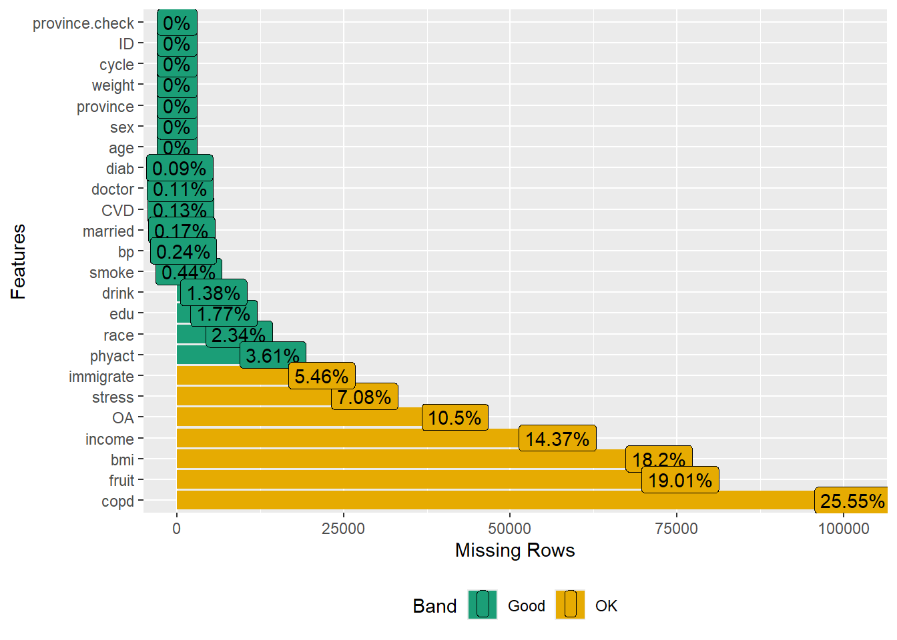

CCHS: Assessing data
Let us load all the necessary packages for data manipulation, statistical analysis, and plotting.
Load data
Data loading that we saved earlier:
Checking
Check the data for missingness
Checks the dimensions of the data and runs functions to explore missing data, stratifying by some variables. Additionally, it plots the missing data for visualization.
dim(analytic)
#> [1] 397173 24
require("tableone")
#CreateTableOne(data = analytic, includeNA = TRUE)
CreateTableOne(data = analytic, strata = "CVD", includeNA = TRUE)
#> Stratified by CVD
#> event no event p test
#> n 25524 371121
#> CVD (%) NaN
#> event 25524 (100.0) 0 ( 0.0)
#> no event 0 ( 0.0) 371121 (100.0)
#> NA 0 ( 0.0) 0 ( 0.0)
#> age (%) <0.001
#> 20-29 years 330 ( 1.3) 48293 ( 13.0)
#> 30-39 years 580 ( 2.3) 63194 ( 17.0)
#> 40-49 years 1498 ( 5.9) 63549 ( 17.1)
#> 50-59 years 3635 ( 14.2) 57300 ( 15.4)
#> 60-64 years 2720 ( 10.7) 22497 ( 6.1)
#> 65 years and over 16496 ( 64.6) 64198 ( 17.3)
#> teen 265 ( 1.0) 52090 ( 14.0)
#> sex = Male (%) 12506 ( 49.0) 169776 ( 45.7) <0.001
#> married (%) <0.001
#> not single 13287 ( 52.1) 188687 ( 50.8)
#> single 12207 ( 47.8) 181811 ( 49.0)
#> NA 30 ( 0.1) 623 ( 0.2)
#> race (%) <0.001
#> Non-white 1276 ( 5.0) 37323 ( 10.1)
#> White 23629 ( 92.6) 325178 ( 87.6)
#> NA 619 ( 2.4) 8620 ( 2.3)
#> edu (%) <0.001
#> < 2ndary 11547 ( 45.2) 112678 ( 30.4)
#> 2nd grad. 3310 ( 13.0) 61355 ( 16.5)
#> Other 2nd grad. 1323 ( 5.2) 27643 ( 7.4)
#> Post-2nd grad. 8744 ( 34.3) 163052 ( 43.9)
#> NA 600 ( 2.4) 6393 ( 1.7)
#> income (%) <0.001
#> $29,999 or less 11664 ( 45.7) 89506 ( 24.1)
#> $30,000-$49,999 4871 ( 19.1) 72994 ( 19.7)
#> $50,000-$79,999 3193 ( 12.5) 81861 ( 22.1)
#> $80,000 or more 1905 ( 7.5) 73768 ( 19.9)
#> NA 3891 ( 15.2) 52992 ( 14.3)
#> bmi (%) <0.001
#> Underweight 504 ( 2.0) 9600 ( 2.6)
#> healthy weight 7176 ( 28.1) 141200 ( 38.0)
#> Overweight 12104 ( 47.4) 153887 ( 41.5)
#> NA 5740 ( 22.5) 66434 ( 17.9)
#> phyact (%) <0.001
#> Active 3642 ( 14.3) 94844 ( 25.6)
#> Inactive 15494 ( 60.7) 174976 ( 47.1)
#> Moderate 4928 ( 19.3) 88480 ( 23.8)
#> NA 1460 ( 5.7) 12821 ( 3.5)
#> doctor (%) <0.001
#> No 1134 ( 4.4) 57425 ( 15.5)
#> Yes 24384 ( 95.5) 313282 ( 84.4)
#> NA 6 ( 0.0) 414 ( 0.1)
#> stress (%) <0.001
#> Not too stressed 20041 ( 78.5) 266358 ( 71.8)
#> stressed 5184 ( 20.3) 76986 ( 20.7)
#> NA 299 ( 1.2) 27777 ( 7.5)
#> smoke (%) <0.001
#> Current smoker 4481 ( 17.6) 93253 ( 25.1)
#> Former smoker 13927 ( 54.6) 143421 ( 38.6)
#> Never smoker 6981 ( 27.4) 132891 ( 35.8)
#> NA 135 ( 0.5) 1556 ( 0.4)
#> drink (%) <0.001
#> Current drinker 15852 ( 62.1) 279583 ( 75.3)
#> Former driker 6820 ( 26.7) 48373 ( 13.0)
#> Never drank 2421 ( 9.5) 38195 ( 10.3)
#> NA 431 ( 1.7) 4970 ( 1.3)
#> fruit (%) <0.001
#> 0-3 daily serving 4284 ( 16.8) 79088 ( 21.3)
#> 4-6 daily serving 10527 ( 41.2) 148684 ( 40.1)
#> 6+ daily serving 5047 ( 19.8) 73729 ( 19.9)
#> NA 5666 ( 22.2) 69620 ( 18.8)
#> bp (%) <0.001
#> No 12611 ( 49.4) 315344 ( 85.0)
#> Yes 12857 ( 50.4) 55037 ( 14.8)
#> NA 56 ( 0.2) 740 ( 0.2)
#> copd (%) <0.001
#> No 23378 ( 91.6) 267481 ( 72.1)
#> Yes 1449 ( 5.7) 3043 ( 0.8)
#> NA 697 ( 2.7) 100597 ( 27.1)
#> diab (%) <0.001
#> No 20461 ( 80.2) 353817 ( 95.3)
#> Yes 5038 ( 19.7) 17138 ( 4.6)
#> NA 25 ( 0.1) 166 ( 0.0)
#> province = South (%) 25271 ( 99.0) 363659 ( 98.0) <0.001
#> weight (mean (SD)) 152.58 (181.69) 203.40 (244.28) <0.001
#> cycle (%) <0.001
#> 11 7968 ( 31.2) 122798 ( 33.1)
#> 21 9027 ( 35.4) 124838 ( 33.6)
#> 31 8529 ( 33.4) 123485 ( 33.3)
#> ID (mean (SD)) 199839.07 (114705.35) 198466.74 (114661.51) 0.064
#> OA (%) <0.001
#> Control 12655 ( 49.6) 301675 ( 81.3)
#> OA 6522 ( 25.6) 34346 ( 9.3)
#> NA 6347 ( 24.9) 35100 ( 9.5)
#> immigrate (%) <0.001
#> > 10 years 2295 ( 9.0) 24409 ( 6.6)
#> not immigrant 21342 ( 83.6) 316353 ( 85.2)
#> recent 159 ( 0.6) 10476 ( 2.8)
#> NA 1728 ( 6.8) 19883 ( 5.4)
#> province.check (%) NaN
#> NEWFOUNDLAND 519 ( 2.0) 7398 ( 2.0)
#> PEI 567 ( 2.2) 7172 ( 1.9)
#> NOVA SCOTIA 1308 ( 5.1) 14015 ( 3.8)
#> NEW BRUNSWICK 1223 ( 4.8) 13786 ( 3.7)
#> QU\xc9BEC 1380 ( 5.4) 20625 ( 5.6)
#> ONTARIO 8596 ( 33.7) 115053 ( 31.0)
#> MANITOBA 1339 ( 5.2) 22074 ( 5.9)
#> SASKATCHEWAN 1542 ( 6.0) 21782 ( 5.9)
#> ALBERTA 1837 ( 7.2) 38238 ( 10.3)
#> BRITISH COLUMBIA 2847 ( 11.2) 46834 ( 12.6)
#> YUKON/NWT/NUNAVT 173 ( 0.7) 4884 ( 1.3)
#> NOT APPLICABLE 0 ( 0.0) 0 ( 0.0)
#> DON'T KNOW 0 ( 0.0) 0 ( 0.0)
#> REFUSAL 0 ( 0.0) 0 ( 0.0)
#> NOT STATED 0 ( 0.0) 0 ( 0.0)
#> QUEBEC 3839 ( 15.0) 52850 ( 14.2)
#> NFLD & LAB. 274 ( 1.1) 3832 ( 1.0)
#> YUKON/NWT/NUNA. 80 ( 0.3) 2578 ( 0.7)
CreateTableOne(data = analytic, strata = "OA", includeNA = TRUE)
#> Stratified by OA
#> Control OA p test
#> n 314542 40943
#> CVD (%) <0.001
#> event 12655 ( 4.0) 6522 ( 15.9)
#> no event 301675 ( 95.9) 34346 ( 83.9)
#> NA 212 ( 0.1) 75 ( 0.2)
#> age (%) <0.001
#> 20-29 years 46805 ( 14.9) 537 ( 1.3)
#> 30-39 years 59233 ( 18.8) 1622 ( 4.0)
#> 40-49 years 55598 ( 17.7) 4128 ( 10.1)
#> 50-59 years 43746 ( 13.9) 8994 ( 22.0)
#> 60-64 years 15772 ( 5.0) 5100 ( 12.5)
#> 65 years and over 41661 ( 13.2) 20436 ( 49.9)
#> teen 51727 ( 16.4) 126 ( 0.3)
#> sex = Male (%) 153889 ( 48.9) 11627 ( 28.4) <0.001
#> married (%) <0.001
#> not single 158065 ( 50.3) 21794 ( 53.2)
#> single 155952 ( 49.6) 19099 ( 46.6)
#> NA 525 ( 0.2) 50 ( 0.1)
#> race (%) <0.001
#> Non-white 34028 ( 10.8) 1803 ( 4.4)
#> White 273378 ( 86.9) 38241 ( 93.4)
#> NA 7136 ( 2.3) 899 ( 2.2)
#> edu (%) <0.001
#> < 2ndary 92831 ( 29.5) 14539 ( 35.5)
#> 2nd grad. 52077 ( 16.6) 6291 ( 15.4)
#> Other 2nd grad. 24099 ( 7.7) 2484 ( 6.1)
#> Post-2nd grad. 140400 ( 44.6) 16887 ( 41.2)
#> NA 5135 ( 1.6) 742 ( 1.8)
#> income (%) <0.001
#> $29,999 or less 68530 ( 21.8) 16233 ( 39.6)
#> $30,000-$49,999 61697 ( 19.6) 8360 ( 20.4)
#> $50,000-$79,999 72657 ( 23.1) 6348 ( 15.5)
#> $80,000 or more 67458 ( 21.4) 4191 ( 10.2)
#> NA 44200 ( 14.1) 5811 ( 14.2)
#> bmi (%) <0.001
#> Underweight 8660 ( 2.8) 715 ( 1.7)
#> healthy weight 123416 ( 39.2) 12631 ( 30.9)
#> Overweight 123898 ( 39.4) 20715 ( 50.6)
#> NA 58568 ( 18.6) 6882 ( 16.8)
#> phyact (%) <0.001
#> Active 84269 ( 26.8) 6968 ( 17.0)
#> Inactive 143058 ( 45.5) 23604 ( 57.7)
#> Moderate 75703 ( 24.1) 9176 ( 22.4)
#> NA 11512 ( 3.7) 1195 ( 2.9)
#> doctor (%) <0.001
#> No 53335 ( 17.0) 2221 ( 5.4)
#> Yes 260802 ( 82.9) 38717 ( 94.6)
#> NA 405 ( 0.1) 5 ( 0.0)
#> stress (%) <0.001
#> Not too stressed 223212 ( 71.0) 31769 ( 77.6)
#> stressed 63923 ( 20.3) 8998 ( 22.0)
#> NA 27407 ( 8.7) 176 ( 0.4)
#> smoke (%) <0.001
#> Current smoker 79521 ( 25.3) 8087 ( 19.8)
#> Former smoker 117745 ( 37.4) 20267 ( 49.5)
#> Never smoker 116006 ( 36.9) 12428 ( 30.4)
#> NA 1270 ( 0.4) 161 ( 0.4)
#> drink (%) <0.001
#> Current drinker 239223 ( 76.1) 28622 ( 69.9)
#> Former driker 37042 ( 11.8) 8668 ( 21.2)
#> Never drank 34185 ( 10.9) 3128 ( 7.6)
#> NA 4092 ( 1.3) 525 ( 1.3)
#> fruit (%) <0.001
#> 0-3 daily serving 68629 ( 21.8) 6571 ( 16.0)
#> 4-6 daily serving 125177 ( 39.8) 17214 ( 42.0)
#> 6+ daily serving 62121 ( 19.7) 9123 ( 22.3)
#> NA 58615 ( 18.6) 8035 ( 19.6)
#> bp (%) <0.001
#> No 275443 ( 87.6) 25551 ( 62.4)
#> Yes 38442 ( 12.2) 15341 ( 37.5)
#> NA 657 ( 0.2) 51 ( 0.1)
#> copd (%) <0.001
#> No 213719 ( 67.9) 39007 ( 95.3)
#> Yes 2131 ( 0.7) 1214 ( 3.0)
#> NA 98692 ( 31.4) 722 ( 1.8)
#> diab (%) <0.001
#> No 301943 ( 96.0) 36211 ( 88.4)
#> Yes 12442 ( 4.0) 4705 ( 11.5)
#> NA 157 ( 0.0) 27 ( 0.1)
#> province = South (%) 307761 ( 97.8) 40507 ( 98.9) <0.001
#> weight (mean (SD)) 211.50 (251.46) 159.00 (188.84) <0.001
#> cycle (%) <0.001
#> 11 106231 ( 33.8) 12052 ( 29.4)
#> 21 104530 ( 33.2) 14750 ( 36.0)
#> 31 103781 ( 33.0) 14141 ( 34.5)
#> ID (mean (SD)) 197003.20 (115147.95) 204459.43 (113014.25) <0.001
#> OA (%) NaN
#> Control 314542 (100.0) 0 ( 0.0)
#> OA 0 ( 0.0) 40943 (100.0)
#> NA 0 ( 0.0) 0 ( 0.0)
#> immigrate (%) <0.001
#> > 10 years 19385 ( 6.2) 3622 ( 8.8)
#> not immigrant 268962 ( 85.5) 34509 ( 84.3)
#> recent 10187 ( 3.2) 151 ( 0.4)
#> NA 16008 ( 5.1) 2661 ( 6.5)
#> province.check (%) NaN
#> NEWFOUNDLAND 6315 ( 2.0) 725 ( 1.8)
#> PEI 5892 ( 1.9) 817 ( 2.0)
#> NOVA SCOTIA 11081 ( 3.5) 1880 ( 4.6)
#> NEW BRUNSWICK 11517 ( 3.7) 1693 ( 4.1)
#> QU\xc9BEC 19111 ( 6.1) 2035 ( 5.0)
#> ONTARIO 95651 ( 30.4) 13669 ( 33.4)
#> MANITOBA 18050 ( 5.7) 2272 ( 5.5)
#> SASKATCHEWAN 17941 ( 5.7) 2166 ( 5.3)
#> ALBERTA 32207 ( 10.2) 3608 ( 8.8)
#> BRITISH COLUMBIA 40034 ( 12.7) 4873 ( 11.9)
#> YUKON/NWT/NUNAVT 4446 ( 1.4) 273 ( 0.7)
#> NOT APPLICABLE 0 ( 0.0) 0 ( 0.0)
#> DON'T KNOW 0 ( 0.0) 0 ( 0.0)
#> REFUSAL 0 ( 0.0) 0 ( 0.0)
#> NOT STATED 0 ( 0.0) 0 ( 0.0)
#> QUEBEC 46817 ( 14.9) 6366 ( 15.5)
#> NFLD & LAB. 3145 ( 1.0) 403 ( 1.0)
#> YUKON/NWT/NUNA. 2335 ( 0.7) 163 ( 0.4)
require(DataExplorer)
plot_missing(analytic)
Look for zero-cells
Creates two new variables based on age groups and generates summary tables. It also comments on the presence of ‘zero cells’ in one of the variables, which might require further handling.
analytic$age.65p <- analytic$age.teen <- 0
analytic$age.teen[analytic$age == "teen"] <- 1
analytic$age.65p[analytic$age == "65 years and over"] <- 1
CreateTableOne(data = analytic, strata = "age.teen", includeNA = TRUE)
#> Stratified by age.teen
#> 0 1 p test
#> n 344786 52387
#> CVD (%) <0.001
#> event 25259 ( 7.3) 265 ( 0.5)
#> no event 319031 (92.5) 52090 ( 99.4)
#> NA 496 ( 0.1) 32 ( 0.1)
#> age (%) <0.001
#> 20-29 years 48652 (14.1) 0 ( 0.0)
#> 30-39 years 63810 (18.5) 0 ( 0.0)
#> 40-49 years 65111 (18.9) 0 ( 0.0)
#> 50-59 years 61035 (17.7) 0 ( 0.0)
#> 60-64 years 25265 ( 7.3) 0 ( 0.0)
#> 65 years and over 80913 (23.5) 0 ( 0.0)
#> teen 0 ( 0.0) 52387 (100.0)
#> sex = Male (%) 155980 (45.2) 26543 ( 50.7) <0.001
#> married (%) <0.001
#> not single 201528 (58.5) 685 ( 1.3)
#> single 142639 (41.4) 51660 ( 98.6)
#> NA 619 ( 0.2) 42 ( 0.1)
#> race (%) <0.001
#> Non-white 31107 ( 9.0) 7534 ( 14.4)
#> White 305497 (88.6) 43725 ( 83.5)
#> NA 8182 ( 2.4) 1128 ( 2.2)
#> edu (%) <0.001
#> < 2ndary 83649 (24.3) 40776 ( 77.8)
#> 2nd grad. 59205 (17.2) 5548 ( 10.6)
#> Other 2nd grad. 24580 ( 7.1) 4420 ( 8.4)
#> Post-2nd grad. 170707 (49.5) 1265 ( 2.4)
#> NA 6645 ( 1.9) 378 ( 0.7)
#> income (%) <0.001
#> $29,999 or less 93630 (27.2) 7701 ( 14.7)
#> $30,000-$49,999 69798 (20.2) 8142 ( 15.5)
#> $50,000-$79,999 73596 (21.3) 11512 ( 22.0)
#> $80,000 or more 63697 (18.5) 12018 ( 22.9)
#> NA 44065 (12.8) 13014 ( 24.8)
#> bmi (%) <0.001
#> Underweight 7277 ( 2.1) 2839 ( 5.4)
#> healthy weight 138611 (40.2) 9922 ( 18.9)
#> Overweight 163701 (47.5) 2520 ( 4.8)
#> NA 35197 (10.2) 37106 ( 70.8)
#> phyact (%) <0.001
#> Active 74738 (21.7) 23833 ( 45.5)
#> Inactive 176573 (51.2) 14166 ( 27.0)
#> Moderate 82158 (23.8) 11349 ( 21.7)
#> NA 11317 ( 3.3) 3039 ( 5.8)
#> doctor (%) <0.001
#> No 49874 (14.5) 8749 ( 16.7)
#> Yes 294763 (85.5) 43342 ( 82.7)
#> NA 149 ( 0.0) 296 ( 0.6)
#> stress (%) <0.001
#> Not too stressed 265391 (77.0) 21353 ( 40.8)
#> stressed 78044 (22.6) 4253 ( 8.1)
#> NA 1351 ( 0.4) 26781 ( 51.1)
#> smoke (%) <0.001
#> Current smoker 88986 (25.8) 8866 ( 16.9)
#> Former smoker 150004 (43.5) 7566 ( 14.4)
#> Never smoker 104332 (30.3) 35685 ( 68.1)
#> NA 1464 ( 0.4) 270 ( 0.5)
#> drink (%) <0.001
#> Current drinker 268269 (77.8) 27464 ( 52.4)
#> Former driker 50929 (14.8) 4370 ( 8.3)
#> Never drank 20754 ( 6.0) 19916 ( 38.0)
#> NA 4834 ( 1.4) 637 ( 1.2)
#> fruit (%) <0.001
#> 0-3 daily serving 72392 (21.0) 11049 ( 21.1)
#> 4-6 daily serving 139753 (40.5) 19627 ( 37.5)
#> 6+ daily serving 66831 (19.4) 12026 ( 23.0)
#> NA 65810 (19.1) 9685 ( 18.5)
#> bp (%) <0.001
#> No 276318 (80.1) 51846 ( 99.0)
#> Yes 67763 (19.7) 308 ( 0.6)
#> NA 705 ( 0.2) 233 ( 0.4)
#> copd (%) <0.001
#> No 291191 (84.5) 0 ( 0.0)
#> Yes 4508 ( 1.3) 0 ( 0.0)
#> NA 49087 (14.2) 52387 (100.0)
#> diab (%) <0.001
#> No 322448 (93.5) 52141 ( 99.5)
#> Yes 22032 ( 6.4) 199 ( 0.4)
#> NA 306 ( 0.1) 47 ( 0.1)
#> province = South (%) 338450 (98.2) 51001 ( 97.4) <0.001
#> weight (mean (SD)) 201.76 (245.97) 189.09 (205.24) <0.001
#> cycle (%) <0.001
#> 11 113323 (32.9) 17557 ( 33.5)
#> 21 115548 (33.5) 18524 ( 35.4)
#> 31 115915 (33.6) 16306 ( 31.1)
#> ID (mean (SD)) 199143.77 (114810.36) 194922.59 (113553.38) <0.001
#> OA (%) <0.001
#> Control 262815 (76.2) 51727 ( 98.7)
#> OA 40817 (11.8) 126 ( 0.2)
#> NA 41154 (11.9) 534 ( 1.0)
#> immigrate (%) <0.001
#> > 10 years 25976 ( 7.5) 770 ( 1.5)
#> not immigrant 289651 (84.0) 48427 ( 92.4)
#> recent 8710 ( 2.5) 1934 ( 3.7)
#> NA 20449 ( 5.9) 1256 ( 2.4)
#> province.check (%) NaN
#> NEWFOUNDLAND 6646 ( 1.9) 1278 ( 2.4)
#> PEI 6802 ( 2.0) 942 ( 1.8)
#> NOVA SCOTIA 13337 ( 3.9) 2004 ( 3.8)
#> NEW BRUNSWICK 13057 ( 3.8) 1968 ( 3.8)
#> QU\xc9BEC 19186 ( 5.6) 2826 ( 5.4)
#> ONTARIO 107768 (31.3) 16053 ( 30.6)
#> MANITOBA 20362 ( 5.9) 3092 ( 5.9)
#> SASKATCHEWAN 20160 ( 5.8) 3201 ( 6.1)
#> ALBERTA 34293 ( 9.9) 5834 ( 11.1)
#> BRITISH COLUMBIA 43431 (12.6) 6336 ( 12.1)
#> YUKON/NWT/NUNAVT 4170 ( 1.2) 894 ( 1.7)
#> NOT APPLICABLE 0 ( 0.0) 0 ( 0.0)
#> DON'T KNOW 0 ( 0.0) 0 ( 0.0)
#> REFUSAL 0 ( 0.0) 0 ( 0.0)
#> NOT STATED 0 ( 0.0) 0 ( 0.0)
#> QUEBEC 49806 (14.4) 6958 ( 13.3)
#> NFLD & LAB. 3602 ( 1.0) 509 ( 1.0)
#> YUKON/NWT/NUNA. 2166 ( 0.6) 492 ( 0.9)
#> age.teen (mean (SD)) 0.00 (0.00) 1.00 (0.00) <0.001
#> age.65p (mean (SD)) 0.23 (0.42) 0.00 (0.00) <0.001
# copd has zero cells
# analytic$age[analytic$age == 'teen'] <- NA (will set this if we use copd)CreateTableOne(data = analytic, strata = "age.65p", includeNA = TRUE)
#> Stratified by age.65p
#> 0 1 p test
#> n 316260 80913
#> CVD (%) <0.001
#> event 9028 ( 2.9) 16496 ( 20.4)
#> no event 306923 (97.0) 64198 ( 79.3)
#> NA 309 ( 0.1) 219 ( 0.3)
#> age (%) <0.001
#> 20-29 years 48652 (15.4) 0 ( 0.0)
#> 30-39 years 63810 (20.2) 0 ( 0.0)
#> 40-49 years 65111 (20.6) 0 ( 0.0)
#> 50-59 years 61035 (19.3) 0 ( 0.0)
#> 60-64 years 25265 ( 8.0) 0 ( 0.0)
#> 65 years and over 0 ( 0.0) 80913 (100.0)
#> teen 52387 (16.6) 0 ( 0.0)
#> sex = Male (%) 150152 (47.5) 32371 ( 40.0) <0.001
#> married (%) <0.001
#> not single 163660 (51.7) 38553 ( 47.6)
#> single 152077 (48.1) 42222 ( 52.2)
#> NA 523 ( 0.2) 138 ( 0.2)
#> race (%) <0.001
#> Non-white 35329 (11.2) 3312 ( 4.1)
#> White 274000 (86.6) 75222 ( 93.0)
#> NA 6931 ( 2.2) 2379 ( 2.9)
#> edu (%) <0.001
#> < 2ndary 84832 (26.8) 39593 ( 48.9)
#> 2nd grad. 53974 (17.1) 10779 ( 13.3)
#> Other 2nd grad. 25305 ( 8.0) 3695 ( 4.6)
#> Post-2nd grad. 147385 (46.6) 24587 ( 30.4)
#> NA 4764 ( 1.5) 2259 ( 2.8)
#> income (%) <0.001
#> $29,999 or less 62513 (19.8) 38818 ( 48.0)
#> $30,000-$49,999 62296 (19.7) 15644 ( 19.3)
#> $50,000-$79,999 77283 (24.4) 7825 ( 9.7)
#> $80,000 or more 72566 (22.9) 3149 ( 3.9)
#> NA 41602 (13.2) 15477 ( 19.1)
#> bmi (%) <0.001
#> Underweight 8588 ( 2.7) 1528 ( 1.9)
#> healthy weight 124932 (39.5) 23601 ( 29.2)
#> Overweight 136225 (43.1) 29996 ( 37.1)
#> NA 46515 (14.7) 25788 ( 31.9)
#> phyact (%) <0.001
#> Active 85384 (27.0) 13187 ( 16.3)
#> Inactive 144019 (45.5) 46720 ( 57.7)
#> Moderate 76602 (24.2) 16905 ( 20.9)
#> NA 10255 ( 3.2) 4101 ( 5.1)
#> doctor (%) <0.001
#> No 53972 (17.1) 4651 ( 5.7)
#> Yes 261866 (82.8) 76239 ( 94.2)
#> NA 422 ( 0.1) 23 ( 0.0)
#> stress (%) <0.001
#> Not too stressed 215454 (68.1) 71290 ( 88.1)
#> stressed 73402 (23.2) 8895 ( 11.0)
#> NA 27404 ( 8.7) 728 ( 0.9)
#> smoke (%) <0.001
#> Current smoker 88068 (27.8) 9784 ( 12.1)
#> Former smoker 115111 (36.4) 42459 ( 52.5)
#> Never smoker 111879 (35.4) 28138 ( 34.8)
#> NA 1202 ( 0.4) 532 ( 0.7)
#> drink (%) <0.001
#> Current drinker 245156 (77.5) 50577 ( 62.5)
#> Former driker 35401 (11.2) 19898 ( 24.6)
#> Never drank 31888 (10.1) 8782 ( 10.9)
#> NA 3815 ( 1.2) 1656 ( 2.0)
#> fruit (%) <0.001
#> 0-3 daily serving 72908 (23.1) 10533 ( 13.0)
#> 4-6 daily serving 124621 (39.4) 34759 ( 43.0)
#> 6+ daily serving 61855 (19.6) 17002 ( 21.0)
#> NA 56876 (18.0) 18619 ( 23.0)
#> bp (%) <0.001
#> No 282174 (89.2) 45990 ( 56.8)
#> Yes 33346 (10.5) 34725 ( 42.9)
#> NA 740 ( 0.2) 198 ( 0.2)
#> copd (%) <0.001
#> No 213221 (67.4) 77970 ( 96.4)
#> Yes 1791 ( 0.6) 2717 ( 3.4)
#> NA 101248 (32.0) 226 ( 0.3)
#> diab (%) <0.001
#> No 305027 (96.4) 69562 ( 86.0)
#> Yes 10974 ( 3.5) 11257 ( 13.9)
#> NA 259 ( 0.1) 94 ( 0.1)
#> province = South (%) 309016 (97.7) 80435 ( 99.4) <0.001
#> weight (mean (SD)) 215.36 (255.33) 140.38 (160.88) <0.001
#> cycle (%) <0.001
#> 11 106647 (33.7) 24233 ( 29.9)
#> 21 105506 (33.4) 28566 ( 35.3)
#> 31 104107 (32.9) 28114 ( 34.7)
#> ID (mean (SD)) 197072.98 (115035.66) 204504.77 (112956.66) <0.001
#> OA (%) <0.001
#> Control 272881 (86.3) 41661 ( 51.5)
#> OA 20507 ( 6.5) 20436 ( 25.3)
#> NA 22872 ( 7.2) 18816 ( 23.3)
#> immigrate (%) <0.001
#> > 10 years 17607 ( 5.6) 9139 ( 11.3)
#> not immigrant 273622 (86.5) 64456 ( 79.7)
#> recent 10325 ( 3.3) 319 ( 0.4)
#> NA 14706 ( 4.6) 6999 ( 8.7)
#> province.check (%) NaN
#> NEWFOUNDLAND 6665 ( 2.1) 1259 ( 1.6)
#> PEI 5993 ( 1.9) 1751 ( 2.2)
#> NOVA SCOTIA 11896 ( 3.8) 3445 ( 4.3)
#> NEW BRUNSWICK 11856 ( 3.7) 3169 ( 3.9)
#> QU\xc9BEC 18128 ( 5.7) 3884 ( 4.8)
#> ONTARIO 97660 (30.9) 26161 ( 32.3)
#> MANITOBA 17967 ( 5.7) 5487 ( 6.8)
#> SASKATCHEWAN 17507 ( 5.5) 5854 ( 7.2)
#> ALBERTA 33445 (10.6) 6682 ( 8.3)
#> BRITISH COLUMBIA 39394 (12.5) 10373 ( 12.8)
#> YUKON/NWT/NUNAVT 4765 ( 1.5) 299 ( 0.4)
#> NOT APPLICABLE 0 ( 0.0) 0 ( 0.0)
#> DON'T KNOW 0 ( 0.0) 0 ( 0.0)
#> REFUSAL 0 ( 0.0) 0 ( 0.0)
#> NOT STATED 0 ( 0.0) 0 ( 0.0)
#> QUEBEC 45226 (14.3) 11538 ( 14.3)
#> NFLD & LAB. 3279 ( 1.0) 832 ( 1.0)
#> YUKON/NWT/NUNA. 2479 ( 0.8) 179 ( 0.2)
#> age.teen (mean (SD)) 0.17 (0.37) 0.00 (0.00) <0.001
#> age.65p (mean (SD)) 0.00 (0.00) 1.00 (0.00) <0.001
analytic$age.65p <- analytic$age.teen <- NULLProduces frequency tables for multiple variable combinations to check the distribution of the data and identify issues.
table(analytic$province.check,analytic$fruit)
#>
#> 0-3 daily serving 4-6 daily serving 6+ daily serving
#> NEWFOUNDLAND 2991 3401 1237
#> PEI 2280 3654 1506
#> NOVA SCOTIA 3089 4804 1974
#> NEW BRUNSWICK 2989 4730 1880
#> QU\xc9BEC 5568 10502 5786
#> ONTARIO 28752 59466 30746
#> MANITOBA 4561 7669 3095
#> SASKATCHEWAN 4173 7390 3003
#> ALBERTA 10828 18901 8251
#> BRITISH COLUMBIA 10726 24422 12390
#> YUKON/NWT/NUNAVT 1829 2045 1023
#> NOT APPLICABLE 0 0 0
#> DON'T KNOW 0 0 0
#> REFUSAL 0 0 0
#> NOT STATED 0 0 0
#> QUEBEC 5655 12396 7966
#> NFLD & LAB. 0 0 0
#> YUKON/NWT/NUNA. 0 0 0
table(analytic$age)
#>
#> 20-29 years 30-39 years 40-49 years 50-59 years
#> 48652 63810 65111 61035
#> 60-64 years 65 years and over teen
#> 25265 80913 52387
table(analytic$copd, analytic$age)
#>
#> 20-29 years 30-39 years 40-49 years 50-59 years 60-64 years
#> No 0 63645 64735 60203 24638
#> Yes 0 117 320 768 586
#>
#> 65 years and over teen
#> No 77970 0
#> Yes 2717 0
table(analytic$stress, analytic$age)
#>
#> 20-29 years 30-39 years 40-49 years 50-59 years 60-64 years
#> Not too stressed 37117 45494 45316 45226 20948
#> stressed 11472 18197 19639 15623 4218
#>
#> 65 years and over teen
#> Not too stressed 71290 21353
#> stressed 8895 4253- universe 15 + is not an issue for
stressas age starts from 20 -
copdis problematic!
Creates tables to look at the distribution of a specific variable across different cycles (time periods) of the survey. Notes differences and issues.
-
fruitvariable measured in an optional component (not available in all cycles)
table(analytic$province.check[analytic$cycle==11],
analytic$fruit[analytic$cycle==11])
#>
#> 0-3 daily serving 4-6 daily serving 6+ daily serving
#> NEWFOUNDLAND 1512 1643 689
#> PEI 1084 1738 773
#> NOVA SCOTIA 1732 2500 1036
#> NEW BRUNSWICK 1663 2363 934
#> QU\xc9BEC 5568 10502 5786
#> ONTARIO 10437 19478 8809
#> MANITOBA 2604 4214 1526
#> SASKATCHEWAN 2386 3957 1387
#> ALBERTA 4391 7050 2664
#> BRITISH COLUMBIA 4321 9350 4278
#> YUKON/NWT/NUNAVT 999 1014 448
#> NOT APPLICABLE 0 0 0
#> DON'T KNOW 0 0 0
#> REFUSAL 0 0 0
#> NOT STATED 0 0 0
#> QUEBEC 0 0 0
#> NFLD & LAB. 0 0 0
#> YUKON/NWT/NUNA. 0 0 0table(analytic$province.check[analytic$cycle==21],
analytic$fruit[analytic$cycle==21])
#>
#> 0-3 daily serving 4-6 daily serving 6+ daily serving
#> NEWFOUNDLAND 1479 1758 548
#> PEI 615 947 344
#> NOVA SCOTIA 1357 2304 938
#> NEW BRUNSWICK 1326 2367 946
#> QU\xc9BEC 0 0 0
#> ONTARIO 9365 20356 10933
#> MANITOBA 1957 3455 1569
#> SASKATCHEWAN 1787 3433 1616
#> ALBERTA 3326 6376 3046
#> BRITISH COLUMBIA 3186 7727 4224
#> YUKON/NWT/NUNAVT 830 1031 575
#> NOT APPLICABLE 0 0 0
#> DON'T KNOW 0 0 0
#> REFUSAL 0 0 0
#> NOT STATED 0 0 0
#> QUEBEC 5655 12396 7966
#> NFLD & LAB. 0 0 0
#> YUKON/NWT/NUNA. 0 0 0
# a different QUEBEC spelling usedtable(analytic$province.check[analytic$cycle==31],
analytic$fruit[analytic$cycle==31])
#>
#> 0-3 daily serving 4-6 daily serving 6+ daily serving
#> NEWFOUNDLAND 0 0 0
#> PEI 581 969 389
#> NOVA SCOTIA 0 0 0
#> NEW BRUNSWICK 0 0 0
#> QU\xc9BEC 0 0 0
#> ONTARIO 8950 19632 11004
#> MANITOBA 0 0 0
#> SASKATCHEWAN 0 0 0
#> ALBERTA 3111 5475 2541
#> BRITISH COLUMBIA 3219 7345 3888
#> YUKON/NWT/NUNAVT 0 0 0
#> NOT APPLICABLE 0 0 0
#> DON'T KNOW 0 0 0
#> REFUSAL 0 0 0
#> NOT STATED 0 0 0
#> QUEBEC 0 0 0
#> NFLD & LAB. 0 0 0
#> YUKON/NWT/NUNA. 0 0 0
# The real problem!- Look at data dictionaries in all cycles
- cycle 1.1 FVCADTOT Universe: All respondents
- cycle 2.1 FVCCDTOT Universe: All respondents
- cycle 3.1 FVCEDTOT Universe: Respondents with FVCEFOPT = 1
Below we delete or modify problematic data, and removes unnecessary variables. Checks the dimensions before and after data cleanup.
dim(analytic)
#> [1] 397173 24
analytic1 <- analytic
# analytic1$South[analytic1$province.check == "NFLD & LAB."] <- NA
# analytic1$South[analytic1$province.check == "YUKON/NWT/NUNA."] <- NA
# analytic1 <- subset(analytic, province.check != "NFLD & LAB." &
# province.check != "YUKON/NWT/NUNA." )
dim(analytic1)
#> [1] 397173 24
analytic1$copd <- NULL # will bring this later for missing data analysis
# CreateTableOne(data = analytic1, strata = "OA", includeNA = TRUE)
# analytic1 <- droplevels.data.frame(analytic1)
analytic1$province.check <- NULL # we already have simplified province variable
# CreateTableOne(data = analytic1, strata = "OA", includeNA = TRUE)Set appropriate reference
Save the original data (with missing values)!
Relevels factors in the dataset so that a specific level is set as the reference level. This is often needed for statistical analysis.
analytic.miss$smoke <- relevel(as.factor(analytic.miss$smoke), ref='Never smoker')
analytic.miss$drink <- relevel(as.factor(analytic.miss$drink), ref='Never drank')
analytic.miss$province <- relevel(as.factor(analytic.miss$province), ref='South')
analytic.miss$immigrate <- relevel(as.factor(analytic.miss$immigrate), ref='not immigrant')Complete data options
Creates a new dataset that omits all rows containing any missing values. This is generally not recommended for most data analysis, as it can introduce bias.
Saving dataset
Let us check the dimensions of multiple data objects and then save them to a file for future use.
Video content (optional)
For those who prefer a video walkthrough, feel free to watch the video below, which offers a description of an earlier version of the above content.